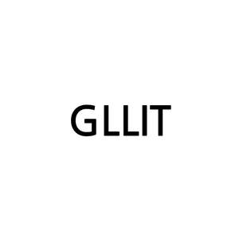

Trade Mark Journal No.2025/014 4 April 2025
UK00004148066 15 January 2025 (41)

International priority date claimed: 16 August 2024
(Republic of Korea)
(40-2024-0152111)
International priority date claimed: 16 August 2024
(Republic of Korea)
(40-2024-0203989)
- Class 41
- Production of CD music; organising of an entertainment society for entertainers using virtual environments; entertainer services using virtual environments; presentation of musical performances using virtual environments; entertainment services performed by singers; entertainment services, namely arranging and conducting of auditions for singers in competitions, talent contests, game shows and other entertainment media; planning of entertainment performances; production of performance events; arranging of performance events for cultural or entertainment purposes; planning of performance events; arranging of contest exhibition for cultural and/or scientific purposes; nightclub services [entertainment]; news reporter services relating to gathering and dissemination of news; production of documentaries; organisation of pop music concerts; disc jockey services; digital filming services; presentation of live performances; performances of live music; production of live performances; entertainment in the nature of live performances and personal appearances by a costumed character; providing of digital music via mobile devices; arranging and conducting of cultural experience events; production of music videos; art gallery services for cultural or educational purposes; photography; production of animations or animated films; arranging of displays for entertainment purposes; fan club services in the nature of entertainment; organising of an entertainment society for entertainers; entertainer services; art exhibitions; providing audio or video studio services; providing audio or video studios; production of audio and video programmes; providing entertainment information via a website; production of audio recordings; production of music performances; presentation of musical performances; production of music; music composition services; music arranging services; rental of audio recordings via internet online; songwriting; presentation of concerts; consultancy and information services relating to arranging, conducting and organization of concerts; arranging, conducting and organization of concerts; provision of entertainment information via television, broadband, wireless and on-line services; entertainment services providing non-downloadable online virtual audio file, video file, image file, jewelry, postcards, posters, photographs, photograph albums, books, magazines, purses, bags, furniture, towels, blankets, clothing, caps, footwear, toys, games, houses, buildings, vehicles, foods and beverages; artists education using virtual environments; providing facilities for movies, shows, plays, music or educational training using virtual environments; training and instruction using virtual environments; entertainment services provided in virtual environments; gaming services; arranging and conducting of competitions related to education or entertainment; providing online non-downloadable comic books and graphic novels; providing on-line electronic publications, not downloadable, in the field of music; internet games non downloadable; online game services provided via mobile applications; instruction of cultural experience education; arranging and conducting of seminars, conferences and exhibitions for cultural or educational purposes; presentation of works of visual art and literature to the public for cultural or educational purposes; publishing of books, magazines; booking of seats for shows and sports events; instruction of acting/singing/dancing; game services provided on-line from a computer network for entertainment and further education purposes; information relating to entertainment and amusement; ticket reservation and booking services for entertainment, sporting and cultural events; entertainment services; artists education; providing facilities for movies, shows, plays, music or educational training; providing user ratings for entertainment or cultural purposes; provision of on-line training; distance learning services; publishing of web magazines; education and training services relating to the music and entertainment industries; multimedia publishing of printed matter, books, magazines, journals, newspapers, newsletters, tutorials, maps, graphics, photographs, videos, music and electronic publications; providing online electronic publications, not downloadable; providing of read-only online information relating to electronic publications; virtual environment game services provided online from a computer network; game services provided online from a computer network; club services related to entertainment or education; correspondence courses; training and instruction .
BElift Lab Inc.
Representative: Murgitroyd & Company